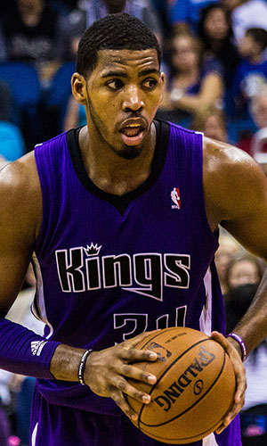

|  |
Матчи |
81 |
|
Передачи (всего/среднее) |
85 |
1 |
| В основе |
63 |
|
Подборы в защите (всего/среднее) |
392 |
4.8 |
| Время (всего/среднее) |
1991:00 |
24:35 |
Подборы в атаке (всего/среднее) |
139 |
1.7 |
| Очки (всего/среднее) |
491 |
6.1 |
Подборы (всего/среднее) |
530 |
6.5 |
| 2-очковые броски (всего/среднее) |
201/427 |
2.5/5.3 |
Перехваты (всего/среднее) |
33 |
0.4 |
| 2-очковые броски (% реализации) |
47.1% |
|
Потери (всего/среднее) |
84 |
1 |
| 3-очковые броски (всего/среднее) |
0/1 |
0/0 |
Блокшоты (всего/среднее) |
57 |
0.7 |
| 3-очковые броски (% реализации) |
0% |
|
Блокшоты соперника (всего/среднее) |
35 |
0.4 |
| Штрафные броски (всего/среднее) |
89/143 |
1.1/1.8 |
Фолы (всего/среднее) |
239 |
3 |
| Джейсон Томпсон |
Штрафные броски (% реализации) |
62.2% |
|
Коэффициент полезности (всего/среднее) |
557 |
6.9 |